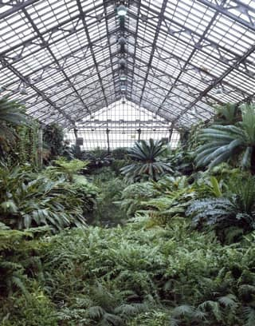
landmark:chicago#garfield-park-conservatory“Garfield Park Conservatory, one of the world's largest greenhouses, Chicago, Illinois” — Highsmith, Carol M., 1946-, photographer · 1980-01-01 · Library of Congress
Public domain · loc 2011636231 · high · modern · still looks: yes
title: 'Garfield Park Conservatory, one of the world's largest greenhouses'
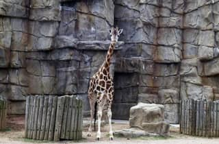
landmark:chicago#lincoln-park-zoo“Giraffe at Lincoln Park Zoo, Chicago, Illinois” — Highsmith, Carol M., 1946-, photographer · 1980-01-01 · Library of Congress
Public domain · loc 2011634195 · med · modern · still looks: yes
title "Giraffe at Lincoln Park Zoo, Chicago"
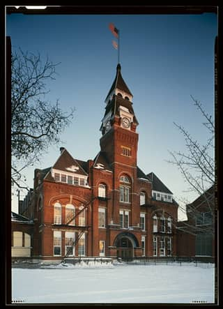
landmark:chicago#pullman-national-historical-park“Pullman Company Administration Building & Shops, 11001 South Cottage Grove Avenue, Chicago, Cook County, IL” — Historic American Buildings Survey, creator · Documentation compiled after 1933 · Library of Congress
Public domain · loc il0042 · med · historic · still looks: yes
title "Pullman Company Administration Building & Shops, 11001 South Cottage Grove Avenue"
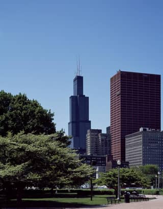
landmark:chicago#willis-tower-skydeck“Willis Tower, long known as Sears Tower, Chicago, Illinois” — Highsmith, Carol M., 1946-, photographer · 1980-01-01 · Library of Congress
Public domain · loc 2011634501 · high · modern · still looks: yes
title "Willis Tower, long known as Sears Tower"
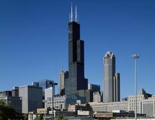
landmark:chicago#willis-tower-skydeck“Skyline view of Chicago, Illinois, dominated by Willis Tower, long known as Sears Tower” — Highsmith, Carol M., 1946-, photographer · 1980-01-01 · Library of Congress
Public domain · loc 2011636232 · high · modern · still looks: yes
title "Skyline view of Chicago ... dominated by Willis Tower"
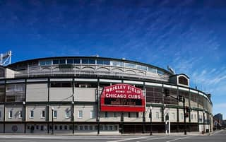
landmark:chicago#wrigley-field“Wrigley Field, home of Major League Baseball's Chicago Cubs, in Chicago, Illinois” — Highsmith, Carol M., 1946-, photographer · 2007-01-01 · Library of Congress
Public domain · loc 2020722070 · high · modern · still looks: yes
title: 'Wrigley Field, home of Major League Baseball's Chicago Cubs'
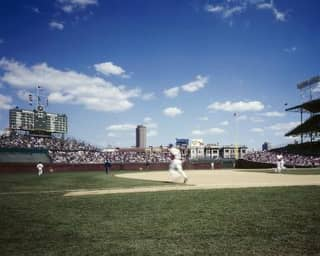
landmark:chicago#wrigley-field“Wrigley Field, Chicago, Illinois” — Highsmith, Carol M., 1946-, photographer · 1980-01-01 · Library of Congress
Public domain · loc 2011630442 · med · modern · still looks: yes
title: 'Wrigley Field, Chicago, Illinois'
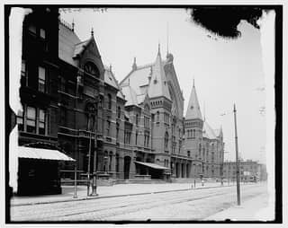
landmark:cincinnati#cincinnati-music-hall“[Music Hall, Cincinnati, Ohio]” — Detroit Publishing Co., publisher · 1900-01-01 · Library of Congress
Public domain · loc 2016809644 · med · historic · still looks: yes
title: '[Music Hall, Cincinnati, Ohio]'
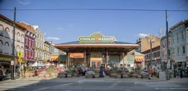
landmark:cincinnati#findlay-market“The 1855 Findlay Market, Ohio's oldest surviving public market in the now-gentrified (in 2016) Over-the-Rhine neighborhood of Cincinnati, Ohio” — Highsmith, Carol M., 1946-, photographer · 2016-01-01 · Library of Congress
Public domain · loc 2016632931 · high · modern · still looks: yes
title: 'The 1855 Findlay Market'
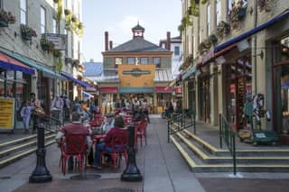
landmark:cincinnati#findlay-market“Scene outside the 1855 Findlay Market, Ohio's oldest surviving public market in the now-gentrified (in 2016) Over-the-Rhine neighborhood of Cincinnati, Ohio” — Highsmith, Carol M., 1946-, photographer · 2016-01-01 · Library of Congress
Public domain · loc 2016632929 · high · modern · still looks: yes
title: 'Scene outside the 1855 Findlay Market'
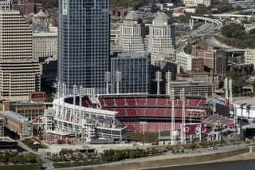
landmark:cincinnati#great-american-ball-park-and-reds-hall-of-fame“Aerial view of downtown Cincinnati, Ohio focusing on the Great American Ballpark, home field of the city's Cincinnati Reds baseball team” — Highsmith, Carol M., 1946-, photographer · 2016-01-01 · Library of Congress
Public domain · loc 2016632882 · high · modern · still looks: yes
title: 'focusing on the Great American Ballpark, home field of the city's Cincinnati Reds'
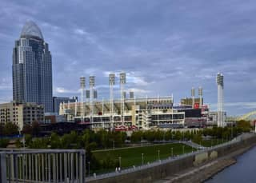
landmark:cincinnati#great-american-ball-park-and-reds-hall-of-fame“View from the Ohio River waterfront in Cincinnati, Ohio, at the Great American Ballpark, home of the Cincinnati Reds major-league baseball team, and the city's tallest building, the Great American Tower at Queen City Square” — Highsmith, Carol M., 1946-, photographer · 2016-01-01 · Library of Congress
Public domain · loc 2016632965 · high · modern · still looks: yes
title: 'at the Great American Ballpark, home of the Cincinnati Reds'
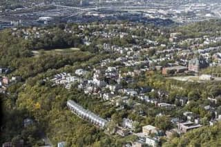
landmark:cincinnati#over-the-rhine-historic-district“Aerial view of Cincinnati, Ohio, looking west toward Interstate Highway 75 from the Over the Rhine neighborhood north of downtown” — Highsmith, Carol M., 1946-, photographer · 2016-01-01 · Library of Congress
Public domain · loc 2016632869 · med · modern · still looks: yes
title: 'from the Over the Rhine neighborhood' (view may show beyond the district)
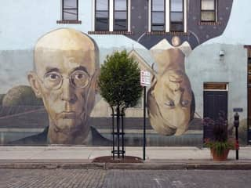
landmark:columbus#short-north-arts-district“American Gothic Mural, Columbus, Ohio” — Highsmith, Carol M., 1946-, photographer · 2009-01-01 · Library of Congress
Public domain · loc 2010630103 · med · modern · still looks: yes
record: mural in the Short North Arts District, painted 2002 by Steve Galgas and Mike Altman
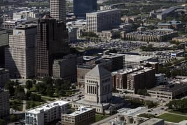
landmark:indianapolis#indiana-world-war-memorial-plaza“Aerial view of Indianapolis, Indiana, with a focus on the Indiana World War Memorial, built to honor the veterans of World War I” — Highsmith, Carol M., 1946-, photographer · 2016-01-01 · Library of Congress
Public domain · loc 2016631789 · high · modern · still looks: yes
title: 'with a focus on the Indiana World War Memorial'
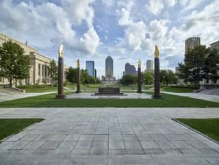
landmark:indianapolis#indiana-world-war-memorial-plaza“The Indiana World War Memorial Plaza in Indianapolis, Indiana, originally built to honor the veterans of World War I” — Highsmith, Carol M., 1946-, photographer · 2016-01-01 · Library of Congress
Public domain · loc 2016632039 · high · modern · still looks: yes
title: 'The Indiana World War Memorial Plaza' (result URL seen with /marc/ suffix)
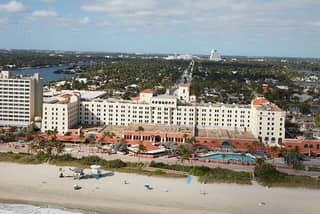
landmark:miami#hollywood-beach-broadwalk“Aerial view of Hollywood, a community in Broward County, Florida, between Ft. Lauderdale and Miami Beach, with a focus on the historic Hollywood Beach Resort” — Highsmith, Carol M., 1946-, photographer · 2020 · Library of Congress
Public domain · loc 2020721021 · med · modern · still looks: yes
title focuses on Hollywood Beach Resort on the beachfront; Broadwalk not named
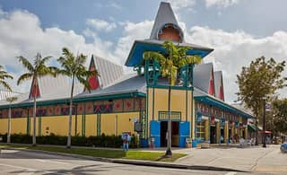
landmark:miami#little-haiti-cultural-complex“The colorful Mache Ayisyen Caribbean Marketplace in Miami, Florida's Little Haiti, long a neighborhood populated by many Haitian exiles, which in the early 21st Century became home to other Caribbean immigrants and Hispanics from elsewhere in Central and South America” — Highsmith, Carol M., 1946-, photographer · 2020-01-01 · Library of Congress
Public domain · loc 2020720657 · med · modern · still looks: yes
title: 'Mache Ayisyen Caribbean Marketplace in Miami, Florida's Little Haiti' - complex itself not named
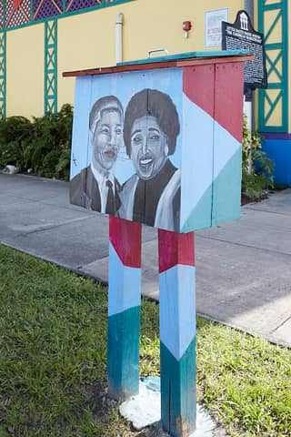
landmark:miami#little-haiti-cultural-complex“Mache Ayisyen Caribbean Marketplace in Miami, Florida's Little Haiti, long a neighborhood populated by many Haitian exiles, which in the early 21st Century became home to other Caribbean immigrants and Hispanics from elsewhere in Central and South America” — Highsmith, Carol M., 1946-, photographer · 2020-01-01 · Library of Congress
Public domain · loc 2020720659 · med · modern · still looks: yes
title: 'Mache Ayisyen Caribbean Marketplace' - complex itself not named
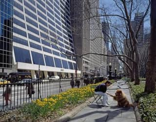
landmark:newyork#bryant-park“Bryant Park in New York City” — Highsmith, Carol M., 1946-, photographer · 1980-01-01 · Library of Congress
Public domain · loc 2011632474 · high · modern · still looks: yes
title: "Bryant Park in New York City"
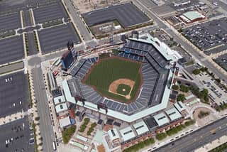
landmark:philadelphia#citizens-bank-park“Aerial view of Philadelphia, Pennsylvania, with a focus on Citizens Bank Park, home of the baseball Philadelphia Phillies” — Highsmith, Carol M., 1946-, photographer · 2019-01-01 · Library of Congress
Public domain · loc 2019689499 · high · modern · still looks: yes
title: "with a focus on Citizens Bank Park, home of the baseball Philadelphia Phillies"
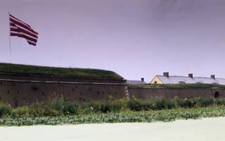
landmark:philadelphia#fort-mifflin“Fort Mifflin in Philadelphia, Pennsylvania” — Highsmith, Carol M., 1946-, photographer · 1980-01-01 · Library of Congress
Public domain · loc 2011630500 · high · modern · still looks: yes
title "Fort Mifflin in Philadelphia, Pennsylvania"
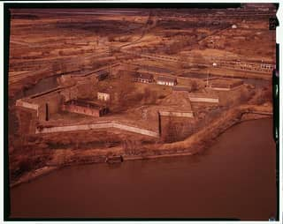
landmark:philadelphia#fort-mifflin“Fort Mifflin, Mud Island, Marine & Penrose Ferry Roads, Philadelphia, Philadelphia County, PA” — Historic American Buildings Survey, creator · Documentation compiled after 1933 · Library of Congress
Public domain · loc pa0682 · med · historic · still looks: yes
title "Fort Mifflin, Mud Island"
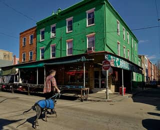
landmark:philadelphia#italian-market-south-9th-street“View of a portion of the Italian Market in south Philadelphia, a historic neighborhood once--and still--home to many Italian-American families in Philadelphia, Pennsylvania” — Highsmith, Carol M., 1946-, photographer · 2019-01-01 · Library of Congress
Public domain · loc 2019688749 · high · modern · still looks: yes
title: "View of a portion of the Italian Market in south Philadelphia"
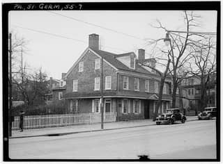
landmark:philadelphia#johnson-house-historic-site“Johnson House, 6306 Germantown Avenue, Philadelphia, Philadelphia County, PA” — Historic American Buildings Survey, creator · Documentation compiled after 1933 · Library of Congress
Public domain · loc pa0754 · med · historic · still looks: yes
title "Johnson House, 6306 Germantown Avenue"
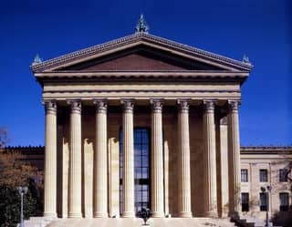
landmark:philadelphia#philadelphia-museum-of-art-and-the-rocky-steps“Philadelphia Museum of Art, Philadelphia, Pennsylvania” — Highsmith, Carol M., 1946-, photographer · 1980-01-01 · Library of Congress
Public domain · loc 2011633567 · high · modern · still looks: yes
title: "Philadelphia Museum of Art, Philadelphia, Pennsylvania"
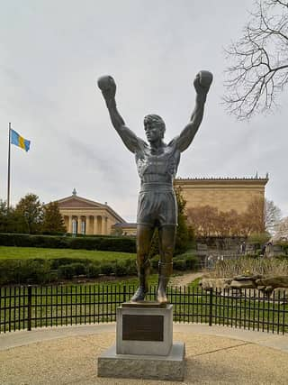
landmark:philadelphia#philadelphia-museum-of-art-and-the-rocky-steps“The "Rocky Statue" on the steps of the Philadelphia Museum of Art in Philadelphia, Pennsylvania, are a huge tourist attraction. Vistors line up, sometimes for blocks, for a chance to photograph the iconic statue, or themselves in it in a "selfie." The 72 stone steps before museum entrance ecome known as the "Rocky Steps" as a result of the scene from the 1982 film "Rocky III" in which star Sylvester Stallone trains for a boxing match by running up and down the stairs. Stallone himself commissioned the bronze statue, by A. Thomas Schomberg” — Highsmith, Carol M., 1946-, photographer · 2019-01-01 · Library of Congress
Public domain · loc 2019689180 · high · modern · still looks: yes
title: "on the steps of the Philadelphia Museum of Art ... known as the Rocky Steps"
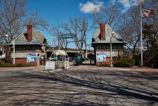
landmark:philadelphia#philadelphia-zoo“Historic gate houses at the Philadelphia Zoo in Philadelphia, Pennsylvania” — Highsmith, Carol M., 1946-, photographer · 2019-01-01 · Library of Congress
Public domain · loc 2019688877 · high · modern · still looks: yes
title "Historic gate houses at the Philadelphia Zoo"
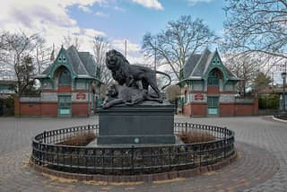
landmark:philadelphia#philadelphia-zoo“Iconic lion statue at the Philadelphia Zoo in Philadelphia, Pennsylvania” — Highsmith, Carol M., 1946-, photographer · 2019-01-01 · Library of Congress
Public domain · loc 2019688853 · med · modern · still looks: yes
title "Iconic lion statue at the Philadelphia Zoo"
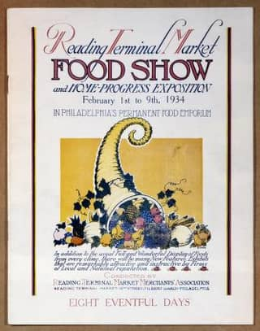
landmark:philadelphia#reading-terminal-market“Reading Terminal Market, Philadelphia, Pennsylvania” — Highsmith, Carol M., 1946-, photographer · 1980-01-01 · Library of Congress
Public domain · loc 2011633394 · high · modern · still looks: yes
title: "Reading Terminal Market, Philadelphia, Pennsylvania"
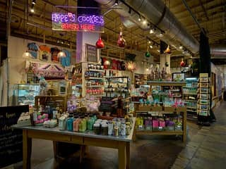
landmark:philadelphia#reading-terminal-market“Scene inside the Reading Terminal Market in Philadelphia, Pennsylvania” — Highsmith, Carol M., 1946-, photographer · 2019-01-01 · Library of Congress
Public domain · loc 2019688780 · high · modern · still looks: yes
title: "Scene inside the Reading Terminal Market in Philadelphia"
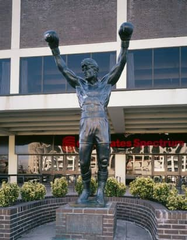
landmark:philadelphia#rocky-statue“Rocky statue, Philadelphia, Pennsylvania” — Highsmith, Carol M., 1946-, photographer · 1980-01-01 · Library of Congress
Public domain · loc 2011630517 · high · modern · still looks: yes
title: "Rocky statue, Philadelphia, Pennsylvania"
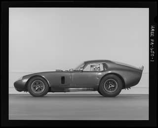
landmark:philadelphia#simeone-foundation-automotive-museum“1964 Shelby Cobra Daytona Coupe Prototype, The Simeone Foundation Automotive Museum 6825-31 Norwitch Drive, Philadelphia, Philadelphia County, PA” — Historic American Engineering Record, creator · Documentation compiled after 1968 · Library of Congress
Public domain · loc pa4142 · med · modern · still looks: yes
title: "The Simeone Foundation Automotive Museum 6825-31 Norwitch Drive"
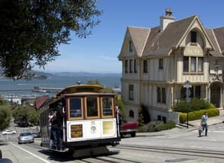
landmark:sanfrancisco#cable-cars-powell-hyde-and-powell-mason“Cable car on Hyde Street, San Francisco, California” — Highsmith, Carol M., 1946-, photographer · 2012-01-01 · Library of Congress
Public domain · loc 2013630202 · high · modern · still looks: yes
title: "Cable car on Hyde Street, San Francisco"
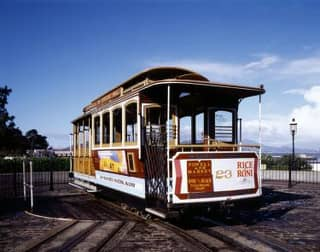
landmark:sanfrancisco#cable-cars-powell-hyde-and-powell-mason“Cable car turnaround, San Francisco, California” — Highsmith, Carol M., 1946-, photographer · 1980-01-01 · Library of Congress
Public domain · loc 2011630099 · med · modern · still looks: yes
title: "Cable car turnaround, San Francisco"
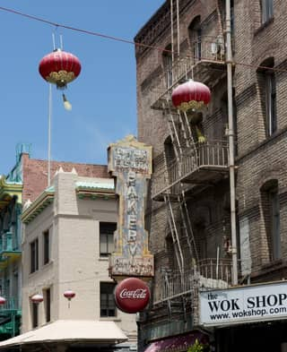
landmark:sanfrancisco#chinatown-dragon-gate-and-grant-avenue“Chinatown, San Francisco, California” — Highsmith, Carol M., 1946-, photographer · 2012-01-01 · Library of Congress
Public domain · loc 2013630549 · med · modern · still looks: yes
title: "Chinatown, San Francisco, California" (no gate named)
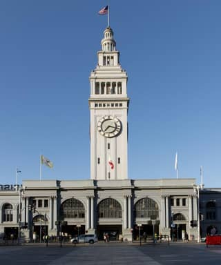
landmark:sanfrancisco#ferry-plaza-farmers-market-foodwise“The San Francisco Ferry Building, a terminal for ferries, a marketplace, and offices is located on The Embarcadero in San Francisco, California” — Highsmith, Carol M., 1946-, photographer · 2012-01-01 · Library of Congress
Public domain · loc 2013630063 · med · modern · still looks: yes
title: "Ferry Building ... a marketplace ... on The Embarcadero"
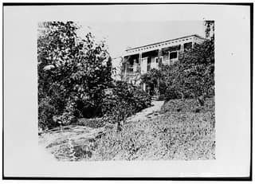
landmark:sanfrancisco#fort-mason“Fort Mason, Quarters No. 4, San Francisco, San Francisco County, CA” — Historic American Buildings Survey, creator · Documentation compiled after 1933 · Library of Congress
Public domain · loc ca1039 · med · historic · still looks: yes (building survives; check)
title: "Fort Mason, Quarters No. 4, San Francisco"
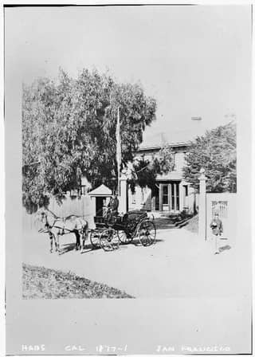
landmark:sanfrancisco#fort-mason“Fort Mason, Quarters No. 1, Commanding General's House, Franklin Street, San Francisco, San Francisco County, CA” — Historic American Buildings Survey, creator · Documentation compiled after 1933 · Library of Congress
Public domain · loc ca0647 · med · historic · still looks: yes (building survives; check)
title: "Fort Mason, Quarters No. 1, Commanding General's House"
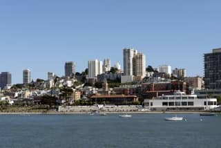
landmark:sanfrancisco#ghirardelli-square“View of Ghiradelli Square in San Francisco, California” — Highsmith, Carol M., 1946-, photographer · 2012-01-01 · Library of Congress
Public domain · loc 2013631791 · high · modern · still looks: yes
title: "View of Ghiradelli Square in San Francisco" (catalog misspelling)
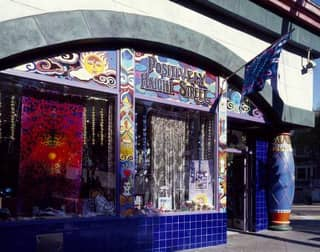
landmark:sanfrancisco#haight-and-ashbury-haight-ashbury“'Head shop' on Haight Street in the Haight-Ashbury section of San Francisco, California, where the hippie movement was headquartered in the 1960s” — Highsmith, Carol M., 1946-, photographer · 1980-01-01 · Library of Congress
Public domain · loc 2011631796 · med · modern · still looks: check (shopfronts change)
title: "on Haight Street in the Haight-Ashbury section"
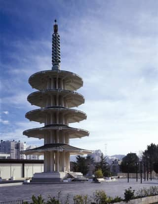
landmark:sanfrancisco#japantown-peace-pagoda“The 100-foot-high, five-tiered Peace Pagoda, built in 1969 as an entrance to Japantown and the Japan Center indoor mall, San Francisco, California” — Highsmith, Carol M., 1946-, photographer · 1980-01-01 · Library of Congress
Public domain · loc 2011636270 · high · modern · still looks: yes
title: "five-tiered Peace Pagoda ... entrance to Japantown"
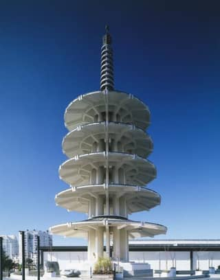
landmark:sanfrancisco#japantown-peace-pagoda“Japantown Peace Pagoda, San Francisco, California” — Highsmith, Carol M., 1946-, photographer · 1980-01-01 · Library of Congress
Public domain · loc hig2011002764 · high · modern · still looks: yes
title: "Japantown Peace Pagoda, San Francisco"
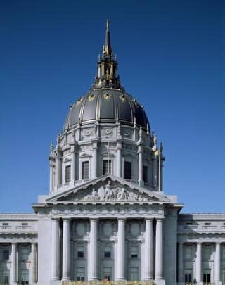
landmark:sanfrancisco#san-francisco-city-hall“San Francisco City Hall, completed in 1915, San Francisco, California” — Highsmith, Carol M., 1946-, photographer · 1980-01-01 · Library of Congress
Public domain · loc 2011633074 · high · modern · still looks: yes
title: "San Francisco City Hall, completed in 1915"
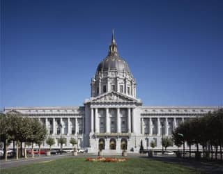
landmark:sanfrancisco#san-francisco-city-hall“City Hall, San Francisco, California” — Highsmith, Carol M., 1946-, photographer · 1980-01-01 · Library of Congress
Public domain · loc 2011630100 · high · modern · still looks: yes
title: "City Hall, San Francisco, California"